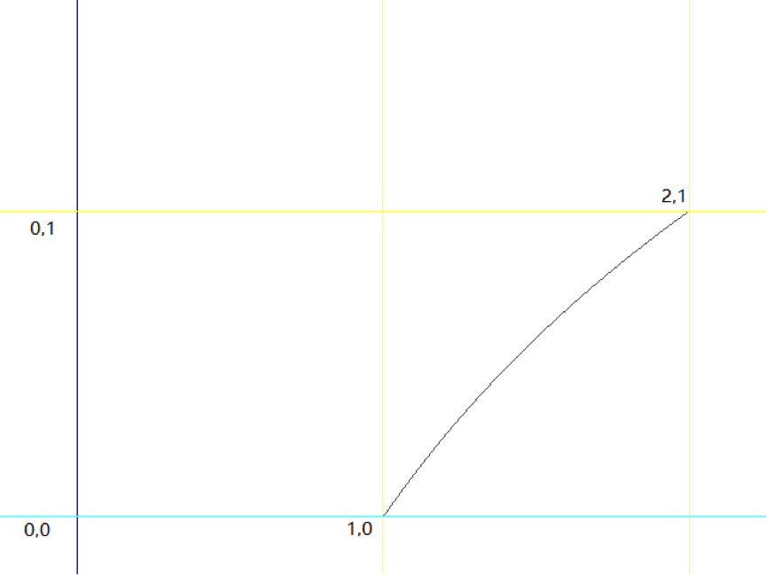

- 000 开篇词 洞悉技术的本质，享受科技的乐趣.md
- 001 程序员如何用技术变现（上）.md
- 002 程序员如何用技术变现（下）.md
- 003 Equifax信息泄露始末.md
- 004 从Equifax信息泄露看数据安全.md
- 005 何为技术领导力.md
- 006 如何拥有技术领导力.md
- 007 推荐阅读：每个程序员都该知道的事.md
- 008 Go语言，Docker和新技术.md
- 009 答疑解惑：渴望、热情和选择.md
- 010 如何成为一个大家愿意追随的Leader？.md
- 011 程序中的错误处理：错误返回码和异常捕捉.md
- 012 程序中的错误处理：异步编程和最佳实践.md
- 013 魔数 0x5f3759df.md
- 014 推荐阅读：机器学习101.md
- 015 时间管理：同扭曲时间的事儿抗争.md
- 016 时间管理：投资赚取时间.md
- 017 故障处理最佳实践：应对故障.md
- 018 故障处理最佳实践：故障改进.md
- 019 答疑解惑：我们应该能够识别的表象和本质.md
- 020 分布式系统架构的冰与火.md
- 021 从亚马逊的实践，谈分布式系统的难点.md
- 022 分布式系统的技术栈.md
- 023 分布式系统关键技术：全栈监控.md
- 024 分布式系统关键技术：服务调度.md
- 025 分布式系统关键技术：流量与数据调度.md
- 026 洞悉PaaS平台的本质.md
- 027 推荐阅读：分布式系统架构经典资料.md
- 028 编程范式游记（1）- 起源.md
- 029 编程范式游记（2）- 泛型编程.md
- 030 编程范式游记（3） - 类型系统和泛型的本质.md
- 031 Git协同工作流，你该怎样选.md
- 032 推荐阅读：分布式数据调度相关论文.md
- 033 编程范式游记（4）- 函数式编程.md
- 034 编程范式游记（5）- 修饰器模式.md
- 035 编程范式游记（6）- 面向对象编程.md
- 036 编程范式游记（7）- 基于原型的编程范式.md
- 037 编程范式游记（8）- Go 语言的委托模式.md
- 038 编程范式游记（9）- 编程的本质.md
- 039 编程范式游记（10）- 逻辑编程范式.md
- 040 编程范式游记（11）- 程序世界里的编程范式.md
- 041 弹力设计篇之“认识故障和弹力设计”.md
- 042 弹力设计篇之“隔离设计”.md
- 043 弹力设计篇之“异步通讯设计”.md
- 044 弹力设计篇之“幂等性设计”.md
- 045 弹力设计篇之“服务的状态”.md
- 046 弹力设计篇之“补偿事务”.md
- 047 弹力设计篇之“重试设计”.md
- 048 弹力设计篇之“熔断设计”.md
- 049 弹力设计篇之“限流设计”.md
- 050 弹力设计篇之“降级设计”.md
- 051 弹力设计篇之“弹力设计总结”.md
- 052 区块链技术 - 区块链的革命性及技术概要.md
- 053 区块链技术 - 区块链技术细节 - 哈希算法.md
- 054 区块链技术 - 区块链技术细节 - 加密和挖矿.md
- 055 区块链技术 - 去中心化的共识机制.md
- 056 区块链技术 - 智能合约.md
- 057 区块链技术 - 传统金融和虚拟货币.md
- 058 管理设计篇之分布式锁.md
- 059 管理设计篇之配置中心.md
- 060 管理设计篇之边车模式.md
- 061 管理设计篇之服务网格.md
- 062 管理设计篇之网关模式.md
- 063 管理设计篇之部署升级策略.md
- 064 性能设计篇之缓存.md
- 065 性能设计篇之异步处理.md
- 066 性能设计篇之数据库扩展.md
- 067 性能设计篇之秒杀.md
- 068 性能设计篇之边缘计算.md
- 069 程序员练级攻略（2018）：开篇词.md
- 070 程序员练级攻略（2018）：零基础启蒙.md
- 071 程序员练级攻略（2018）：正式入门.md
- 072 程序员练级攻略（2018）：程序员修养.md
- 073 程序员练级攻略（2018）：编程语言.md
- 074 程序员练级攻略：理论学科.md
- 075 程序员练级攻略（2018）：系统知识.md
- 076 程序员练级攻略（2018）：软件设计.md
- 077 程序员练级攻略（2018）：Linux系统、内存和网络.md
- 078 程序员练级攻略（2018）：异步IO模型和Lock-Free编程.md
- 079 程序员练级攻略（2018）：Java底层知识.md
- 080 程序员练级攻略（2018）：数据库.md
- 081 程序员练级攻略（2018）：分布式架构入门.md
- 082 程序员练级攻略（2018）：分布式架构经典图书和论文.md
- 083 程序员练级攻略（2018）：分布式架构工程设计.md
- 084 程序员练级攻略（2018）：微服务.md
- 085 程序员练级攻略（2018）：容器化和自动化运维.md
- 086 程序员练级攻略（2018）：机器学习和人工智能.md
- 087 程序员练级攻略（2018）：前端基础和底层原理.md
- 088 程序员练级攻略（2018）：前端性能优化和框架.md
- 089 程序员练级攻略（2018）：UIUX设计.md
- 090 程序员练级攻略（2018）：技术资源集散地.md
- 091 程序员面试攻略：面试前的准备.md
- 092 程序员面试攻略：面试中的技巧.md
- 093 程序员面试攻略：面试风格.md
- 094 程序员面试攻略：实力才是王中王.md
- 095 高效学习：端正学习态度.md
- 096 高效学习：源头、原理和知识地图.md
- 097 高效学习：深度，归纳和坚持实践.md
- 098 高效学习：如何学习和阅读代码.md
- 099 高效学习：面对枯燥和量大的知识.md
- 100 高效沟通：Talk和Code同等重要.md
- 101 高效沟通：沟通阻碍和应对方法.md
- 102 高效沟通：沟通方式及技巧.md
- 103 高效沟通：沟通技术.md
- 104 高效沟通：好老板要善于提问.md
- 105 高效沟通：好好说话的艺术.md
- 106 加餐 谈谈我的“三观”.md
- 107 结束语 业精于勤，行成于思.md
013 魔数 0x5f3759df
下列代码是在《雷神之锤 III 竞技场》源代码中的一个函数（已经剥离了 C 语言预处理器的指令）。其实，最早在 2002 年（或 2003 年）时，这段平方根倒数速算法的代码就已经出现在 Usenet 与其他论坛上了。这段代码在程序员圈内引起了非常大的讨论。
float Q_rsqrt( float number )
{
long i;
float x2, y;
const float threehalfs = 1.5F;
x2 = number * 0.5F;
y = number;
i = * ( long * ) &y; // evil floating point bit level hacking
i = 0x5f3759df - ( i >> 1 ); // what the fuck?
y = * ( float * ) &i;
y = y * ( threehalfs - ( x2 * y * y ) ); // 1st iteration
// 2nd iteration, this can be removed
// y = y * ( threehalfs - ( x2 * y * y ) );
return y;
}
这段代码读起来完全不知所云，尤其是那个魔数 0x5f3759df，完全不知道是个什么东西，所以，注释里也是 What the fuck。今天的这篇文章主要是想带你来了解一下这个函数中的代码究竟是怎样出来的。
其实，这个函数的作用是求平方根倒数，即 $x^{-1/2}$，也就是下面这个算式：
\frac{1}{\sqrt{x}}
当然，它算的是近似值。只不过这个近似值的精度很高，而且计算成本比传统的浮点数运算平方根的算法低太多。在以前那个计算资源还不充分的年代，在一些 3D 游戏场景的计算机图形学中，要求取照明和投影的光照与反射效果，就经常需要计算平方根倒数，而且是大量的计算——对一个曲面上很多的点做平方根倒数的计算。也就是需要用到下面的这个算式，其中的 x,y,z 是 3D 坐标上的一个点的三个坐标值。
\frac{1}{\sqrt{x^{2}+y^{2}+z^{2}}}
基本上来说，在一个 3D 游戏中，我们每秒钟都需要做上百万次平方根倒数运算。而在计算硬件还不成熟的时代，这些计算都需要软件来完成，计算速度非常慢。我们要知道，在上世纪 90 年代，多数浮点数操作的速度更是远远滞后于整数操作。所以，这段代码所带来的作用是非常大的。
计算机的浮点数表示
为了讲清楚这段代码，我们需要先了解一下计算机的浮点数表示法。在 C 语言中，计算机的浮点数表示用的是 IEEE 754 标准，这个标准的表现形式为，把一个 32bits 分成三段。
- 第一段占 1bit。表示符号位。代称为 S（sign）。
- 第二段占 8bits。表示指数。代称为 E（Exponent）。
- 第三段占 23bits。表示尾数。代称为 M（Mantissa）。
如下图所示：
然后呢，一个小数的计算方式是下面这个算式：
(-1)^{S}\ast(1+\frac{M}{2^{23}})\ast 2^{(E-127)}
但是，这个算式基本上来说，完全就是让人一头雾水，摸不着门路。对于浮点数的解释基本上就是下面这张漫画里表现的样子。
下面，让我来试着解释一下浮点数的那三段表示什么意思。
- 第一段符号位。对于这一段，我相信应该没有人不能理解。
- 第二段指数位。什么叫指数？也就是说，对于任何数 x，其都可以找到一个 $n$，使得 $2^{n}$<=x<=$2^{n+1}$。比如：对于 3 来说，因为 2 < 3 < 4，所以 n=1。而浮点数的这个指数为了要表示 0.00x 的小数，所以需要有负数，这 8 个 bits 本来可以表示 0-255。为了表示负的，取值要放在 [-127,128] 这个区间中。这就是为什么我们在上面的公式中看到的 $2^{(E-127)}$ 这一项了。也就是说，$n = E-127$，如果 $n=1$，那么 $E$ 就是 128 了。
- 第三段尾数位。也就是小数位，但是这里叫偏移量可能好一些。这里的取值是从 [ 0 - $2^{23}$] 中。你可以认为，我们把一条线分成 $2^{23}$ 个线段，也就是 8388608 个线段。也就是说，把 $2^{n}$ 到 $2^{n+1}$ 分成了 8388608 个线段。而存储的 M 值，就是从 $2^n$ 到 x 要经过多少个段。这要计算一下，$2^{n}$ 到 x 的长度占 $2^{n}$ 到 $2^{n+1}$ 长度的比例是多少。
我估计你对第三段还是有点不懂，那么我们来举一个例子。比如说，对 3.14 这个小数。
- 是正数。所以，S = 0
- $2^1$ < 3.14 <$2^2$。所以，n=1， n+127 = 128。所以，E=128。
- (3.14 - 2) / (4 - 2) = 0.57， 而 $0.57*2^{23} = 4781506.56$，四舍五入，得到 M = 4781507。因为有四舍五入，所以，产生了浮点数据的精度问题。
把 S、E、M 转成二进制，得到 3.14 的二进制表示。
我们再用 IEEE 754 的那个算式来算一下：
{(-1)}^0*({1+\frac{4781507}{2^{23}}})*2^{(128-127)}
1*(1+0.5700000524520874)*2 =3.1400001049041748046875
你看，浮点数的精度问题出现了。
我们再来看一个示例，小数 0.015。
- 是正数。所以，S = 0。
- $2^{-7}< 0.015 < 2^{-6}$ 。所以，n=-7， n+127 = 120。所以，E=120。
- $ (0.015 - 2^{-7}) / (2^{-6} - 2^{-7}) $ = $0.0071875/0.0078125=0.92$。而 $0.92 * 2^{23} = 7717519.36$，四舍五入，得到 M = 7717519。
于是，我们得到 0.015 的二进制编码：
其中：
- 120 的二进制是 01111000
- 7717519 的二进制是 11101011100001010001111
返回过来算一下：
(-1)^{0}\ast (1+\frac{7717519}{2^{23}})\ast 2^{(120-127)}
(1+0.919999957084656)*0.0078125 =0.014999999664724
你看，浮点数的精度问题又出现了。
我们来用 C 语言验证一下：
int main() {
float x = 3.14;
float y = 0.015;
return 0;
}
在我的 Mac 上用 lldb 工具 Debug 一下。
(lldb) frame variable
(float) x = 3.1400001
(float) y = 0.0149999997
(lldb) frame variable -f b
(float) x = 0b01000000010010001111010111000011
(float) y = 0b00111100011101011100001010001111
从结果上，完全验证了我们的方法。
好了，不知道你看懂了没有？我相信你应该看懂了。
简化浮点数公式
因为那个浮点数表示的公式有点复杂，我们简化一下：
(-1)^{S}\ast (1+\frac{M}{2^{23}})\ast 2^{(E-127)}
我们令，$m = (\frac{M}{2^{23}} )$，$e = (E-127)$。因为符号位在 $y= x^{-\frac{1}{2}}$ 的两端都是 0（正数），也就可以去掉，所以浮点数的算式简化为：
(1+m)\ast2^{e}
上面这个算式是从一个 32bits 二进制计算出一个浮点数。这个 32bits 的整型算式是：
M+E\ast2^{23}
比如，0.015 的 32bits 的二进制是：00111100011101011100001010001111，也就是整型的：
7717519+120\ast 2^{23} = 1014350479 = 0X3C75C28F
平方根倒数公式推导
下面，你会看到好多数学公式，但是请你不要怕，因为这些数学公式只需要高中数学就能看懂的。
我们来看一下，平方根数据公式：
y=\frac{1}{\sqrt[2]{x}}=x^{-\frac{1}{2}}
等式两边取以 2 为基数的对数，就有了：
\log_2(y) =-\frac{1}{2}\log_2(x)
因为我们实际上在算浮点数，所以将公式中的 x 和 y 分别用浮点数的那个浮点数的简化算式 $ (1+ m)*2^e$ 替换掉。代入 $\log()$ 公式中，我们也就有了下面的公式：
\log_{2} (1+m_y)+e_y =-\frac{1}{2}(\log_2(1+m_x)+e_x)
因为有对数，这公式看着就很麻烦，似乎不能再简化了。但是，我们知道，所谓的 $m_x$ 或是 $m_y$，其实是个在 0 和 1 区间内的小数。在这种情况下，$\log_2 (1.x)$ 接近一条直线。

那么我们就可以使用一个直线方程来代替，也就是：
\log_{2}(1+m)\approx m+\sigma
于是，我们的公式就简化成了：
m_y+\sigma+e_y\approx-\frac{1}{2}(m_x+\sigma+e_x)
因为 $m = (\frac{M}{2^{23}})$，$e = (E-127)$，代入公式，得到：
\frac{M_y}{2^{23}}+\sigma+E_y-127 \approx-\frac{1}{2}(\frac{M_x}{2^{23}}+\sigma+E_x-127)
移项整理一下，把 σ 和 127 从左边，移到右边：
\frac{M_y}{2^{23}}+E_y\approx-\frac{1}{2}(\frac{M_x}{2^{23}}+E_x)-\frac{3}{2}(\sigma-127)
再把整个表达式乘以 $2^{23}$，得到：
{M_y}+E_y{2^{23}} \approx-\frac{1}{2}(M_x+E_x{2^{23}})-\frac{3}{2}(\sigma-127){2^{23}}
可以看到一个常数：$-\frac{3}{2}(\sigma-127){2^{23}}$，把负号放进括号里，变成 $\frac{3}{2}(127-\sigma){2^{23}}$，并可以用一个常量代数 R 来取代，于是得到公式：
{M_y}+E_y{2^{23}}\approx R-\frac{1}{2}(M_x+E_x{2^{23}})
还记得我们前面那个“浮点数 32bits 二进制整型算式” $M+E* 2^{23}$ 吗？假设，浮点数 x 的 32bits 的整型公式是：$I_x= M_x+ E_x 2^{23}$，那么上面的公式就可以写成：
I_y\approx R-\frac{1}{2}I_x
代码分析
让我们回到文章的主题，那个平方根函数的代码。
首先是：
i = * ( long * ) &y; // evil floating point bit level hacking
这行代码就是把一个浮点数的 32bits 的二进制转成整型。也就是，前面我们例子里说过的，3.14 的 32bits 的二进制是：01000000010010001111010111000011，整型是：1078523331。即 y = 3.14，i = 1078523331。
然后是：
i = 0x5f3759df - ( i >> 1 ); // what the fuck?
这就是：
i = 0x5f3759df - ( i / 2 );
也就是我们上面推导出来的那个公式：
I_y\approx R-\frac{1}{2}I_x
代码里的 R = 0x5f3759df。
我们又知道，R = $\frac{3}{2}(127-\sigma){2^{23}}$，把代码中的那个魔数代入，就可以计算出来：σ= 0.0450465 。这个数是个神奇的数字，这个数是怎么算出来的，现在还没人知道。不过，我们先往下看后面的代码：
x2 = number * 0.5F;
y = * ( float * ) &i;
y = y * ( threehalfs - ( x2 * y * y ) ); // 1st iteration
// 2nd iteration, this can be removed
// y = y * ( threehalfs - ( x2 * y * y ) );
这段代码相当于下面这个公式：
I_{y’} = I_y(1.5-0.5 x I_y^2)
这个其实是“牛顿求根法”，这是一个为了找到一个 f(x)= 0 的根而用一种不断逼近的计算方式。请看下图：
首先，初始值为 X0，然后找到 X0 所对应的 Y0（把 X0 代入公式得到 Y0 = f(X0)），然后在（X0,Y0）这个点上做一个切线，得到与 X 轴交汇的 X1。再用 X1 做一次上述的迭代，得到 X2，就这样一直迭代下去，一直找到，y = 0 时，x 的值。
牛顿法的通用公式是：
x_{n+1}=x_n-\frac{f(x_n)}{f’(x_n)}
于是，对于 $y= \frac{1}{\sqrt{x}}$ 来说，对固定的 x（常数），我们求 y 使得 $\frac{1}{y^2}-x=0$，$f(y)= \frac{1}{y^2} -x$ , $f’(y)=\frac{-2}{y^3}$ 。 注意：$f’(y)$ 是 $f(y)$ 关于 y 的导数。
代入上述的牛顿法的通用公式后得到：
y_{n+1}=y_n-\frac{\frac{1}{y_n^2}-x}{\frac{-2}{y_n^3}} =\frac{y_n(3-xy_n^2)}{2}=y_n(1.5-0.5xy_n^2)
正好就是我们上面的代码。
整个代码是，之前生成的整数操作产生首次近似值后，将首次近似值作为参数送入函数最后两句进行精化处理。代码中的两次迭代正是为了进一步提高结果的精度。但由于《雷神之锤 III》的图形计算中并不需要太高的精度，所以代码中只进行了一次迭代，二次迭代的代码则被注释了。
相关历史
根据 Wikipedia 上的描述。《雷神之锤 III》的代码直到 QuakeCon 2005 才正式放出，但早在 2002 年（或 2003 年）时，平方根倒数速算法的代码就已经出现在 Usenet 和其他论坛上了。最初人们猜测是《雷神之锤》的创始人 John Carmack 写下了这段代码，但他在回复询问他的邮件时否定了这个观点，并猜测可能是先前曾帮 id Software 优化《雷神之锤》的资深汇编程序员 Terje Mathisen 写下了这段代码。
而 Mathisen 的邮件里表示，在 1990 年代初，他只曾做过类似的实现，确切来说这段代码亦非他所作。现在所知的最早实现是由 Gary Tarolli 在 SGI Indigo 中实现的，但他亦坦承他仅对常数 R 的取值做了一定的改进，实际上他也不是作者。
在向以发明 MATLAB 而闻名的 Cleve Moler 查证后，Rys Sommefeldt 则认为原始的算法是 Ardent Computer 公司的 Greg Walsh 所发明的，但他也没有任何确定性的证据能证明这一点。
不仅该算法的原作者不明，人们也仍无法确定当初选择这个“魔术数字”的方法。Chris Lomont 曾做了个研究：他推算出了一个函数以讨论此速算法的误差，并找出了使误差最小的最佳 R 值 0x5f37642f（与代码中使用的 0x5f3759df 相当接近）。但以之代入算法计算并进行一次牛顿迭代后，所得近似值之精度仍略低于代入 0x5f3759df 的结果。
因此，Lomont 将目标改为查找在进行 1-2 次牛顿迭代后能得到最大精度的 R 值，在暴力搜索后得出最优 R 值为 0x5f375a86，以此值代入算法并进行牛顿迭代，所得的结果都比代入原始值（0x5f3759df）更精确。于是他说，“如果可能我想询问原作者，此速算法是以数学推导还是以反复试错的方式求出来的？”
Lomont 亦指出，64 位的 IEEE754 浮点数（即双精度类型）所对应的魔术数字是 0x5fe6ec85e7de30da。但后来的研究表明，代入 0x5fe6eb50c7aa19f9 的结果精确度更高（McEniry 得出的结果则是 0x5fe6eb50c7b537aa，精度介于两者之间）。
后来 Charles McEniry 使用了一种类似 Lomont 但更复杂的方法来优化 R 值。他最开始使用穷举搜索，所得结果与 Lomont 相同。而后他尝试用带权二分法寻找最优值，所得结果恰是代码中所使用的魔术数字 0x5f3759df。因此，McEniry 认为，这一常数最初或许便是以“在可容忍误差范围内使用二分法”的方式求得。
这可能是编程世界里最经典的魔数的故事，希望你能够从这篇文章中收获一些数学的基础知识。数学真是需要努力学习好的一门功课，尤其在人工智能火热的今天